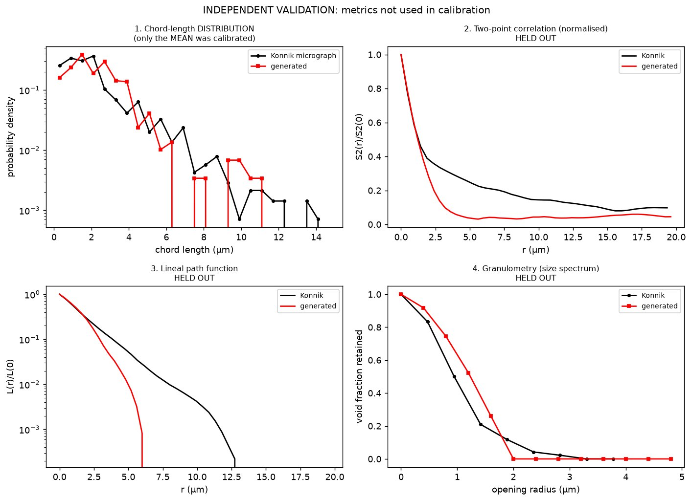
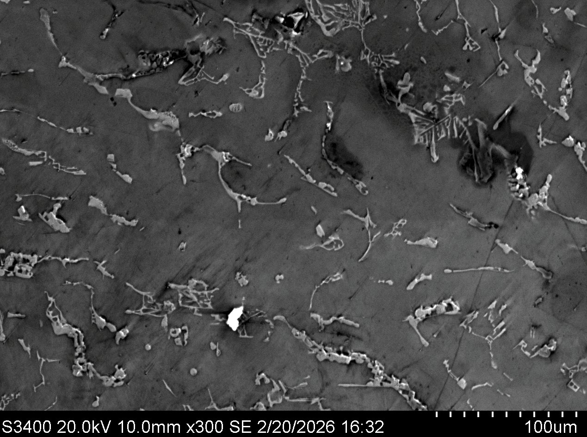

Materials characterization, from the micrograph to the model.
I'm a materials science and engineering undergraduate at Northwestern University, working where experimental characterization meets computation — generating representative microstructures for transport simulation, and building imaging pipelines that pull quantitative measurements out of video.
My research interests are ultra-high-temperature ceramics and materials for extreme environments. I currently work in Prof. Vinayak Dravid's group at NUANCE and on the DARPA-funded NU RADICAL project, and I spent summer 2026 at the University of Illinois Center for Hypersonics and Entry Systems Studies.
Selected work

Oxygen transport through ZrC oxide scales
Generated statistically representative ZrO2 scale microstructures in Python and validated them against morphometrics held out of calibration, then computed oxygen diffusivity across twelve temperature conditions.

High-speed imaging of oil uptake in OHM sponges
High-speed optical microscopy and gravimetric adsorption measurements across 25 sponge formulations, with machine-learning segmentation to extract uptake dynamics from video.

Combinatorial alloy design by directed energy deposition
Test-plan design and property screening for turbine alloy down-selection, using multi-material DED to sweep composition across a build.
Rover wheel design for lunar regolith
Leading a ten-person research subteam on terramechanics and abrasion-resistant material selection for NASA's Lunabotics Challenge.